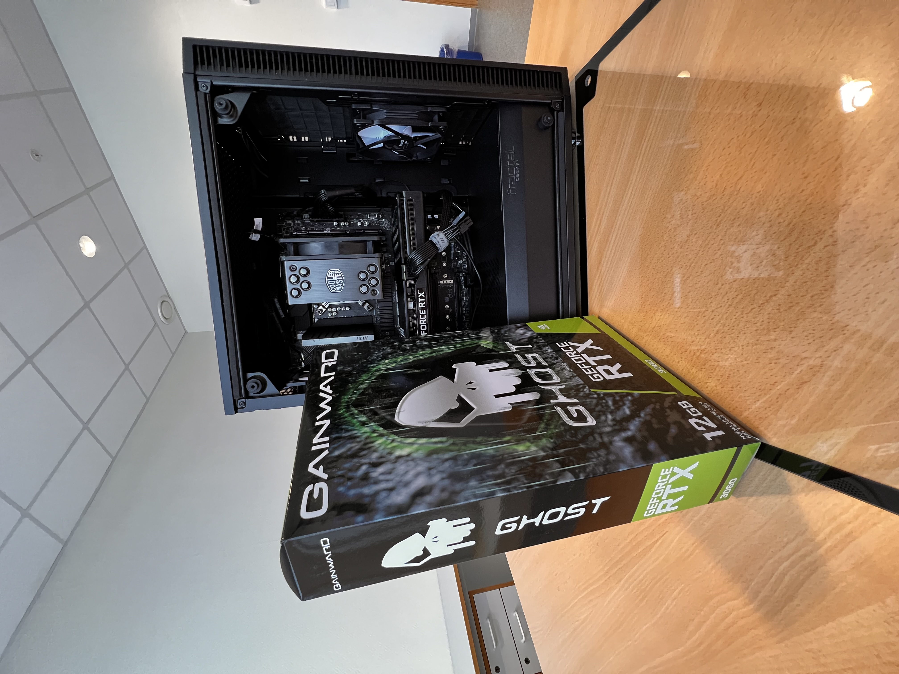
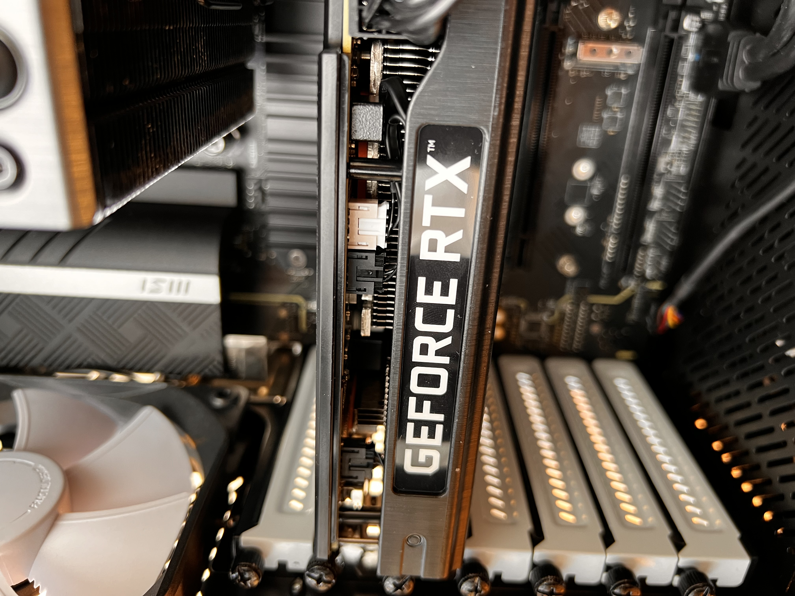
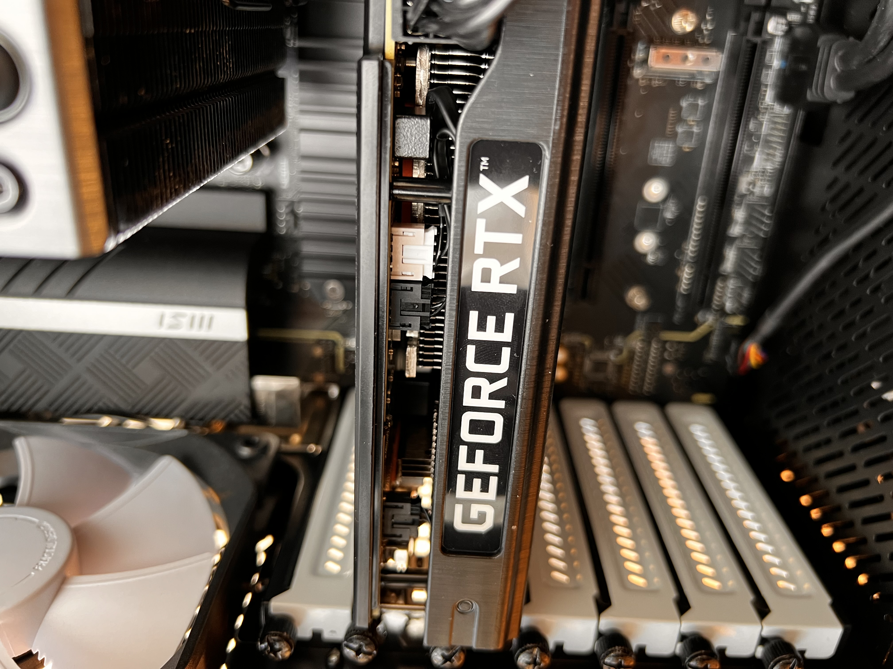

Gaming-PC
 


Gaming-PC-en vår har alle spesifikasjonane ein trenger for å spille over lengre periodar,
med bra yting der ein ikkje trenger å bekymre seg for fps drops. Denne PC klarer dei aller
fleste spill ein kan tenke seg, inkludert: Red Redemtion 2, Total War: Warhammer 3 og COD.
Dette gjeld også når spela køyrar på høg kvalitet. Med 32 GB med Ram og ein 3060 RTX vil denne
maskinen takle lange spill sesjonar utan å måtte gi opp grafikk for yting.
Spesifikasjoner
Hovedkort
MSI PRO Z690-A WIFI
Grafikkort
Gainward GeForce RTX 3060 Ghost
Prosessor
Intel Core i7-12700F CPU
Prosessorvifte
Cooler Master Hyper 212 Black Edition
Minne
Kingston Fury Beast 16GB x 2
Strømforsyning
ASUS TUF GAMING 750W
Lagring
Kingston FURY Renegade SSD 1TB
Kabinett
Fractal Design Define C Temp G
Operativsystem
Windows 11 pro